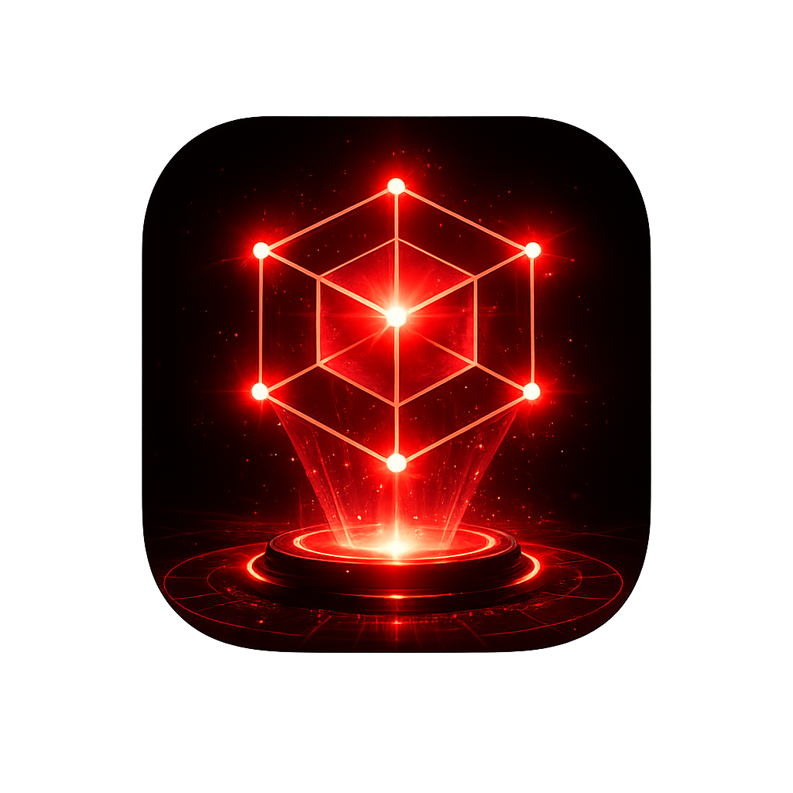

Mesh Chat
Send peer-to-peer messages through Bluetooth connections with a clean Android-first flow.

CoreLink is built for Android and focused on Bluetooth mesh messaging, alerts, voice tools, location sharing, and fast emergency coordination.
This visual layer represents CoreLink as a live mesh: peers joining, links stabilizing, and emergency traffic moving through the graph.
Send peer-to-peer messages through Bluetooth connections with a clean Android-first flow.
Detect paired and nearby Bluetooth devices with a focused, animated discovery screen.
Turn speech into text, record voice notes, preview them locally, and send tools through an active session.
Stage medical, shelter, relay, and location-based help requests with minimal operator friction.
A dedicated session screen for live-call workflow setup and future audio transport expansion.
The website is intentionally lightweight. The real product experience is designed around Android devices in the field.
These sections mirror the screens you shared: the home hub, chat page, voice lab, emergency center, and call deck.
One Android-first start screen with clear feature entry points.
Shared-session messaging with direct access to connection, voice, alert, and call tools.
Speech-to-text, voice note recording, playback, and send controls in one page.
Fast alert staging with structured actions and visible location sharing state.
A dedicated call session interface with calmer colors and a focused workflow.
The website mirrors the app's structure so users understand the product quickly: discover peers, connect, communicate, coordinate, and recover fast.
Open Device Radar to inspect paired devices and nearby Bluetooth nodes.
Host a Bluetooth room or join a paired peer from inside chat without leaving the Android flow.
Use text, voice text, and voice notes through a shared Bluetooth session.
Send structured alerts and location-sharing details from the emergency center.
The site focuses on Android users first: what the app does, how to install it, and what each feature page is for.
Open the site on Android and tap the APK download button.
Approve install from the browser or file manager if Android asks.
Allow Bluetooth, microphone, and location only when the app requests them.
Chat, voice tools, emergency actions, and device discovery rely on one active Bluetooth session layer.
Bluetooth, microphone, and optional location access are requested only where they matter.
This site explains the product and distributes Android builds. The app remains the primary experience.
Near-term upgrades to move from strong prototype toward a more complete field communication tool.
Move from call workflow UI to true live audio transport.
Forward alerts and messages across more than one nearby node.
Add stronger message persistence and clearer reconnection behavior.
Surface mission-friendly activity history and export options.
Tapping the button on an Android phone downloads the APK and opens the normal Android install flow. Browsers cannot silently install apps by themselves.
site/downloads/corelink-android.apk
No. It downloads the APK and then Android handles the install prompt.
CoreLink is built for phone-based field communication. The web layer is mainly for distribution and documentation.
Yes for reading docs and downloading files, but the actual product is designed around Android devices.